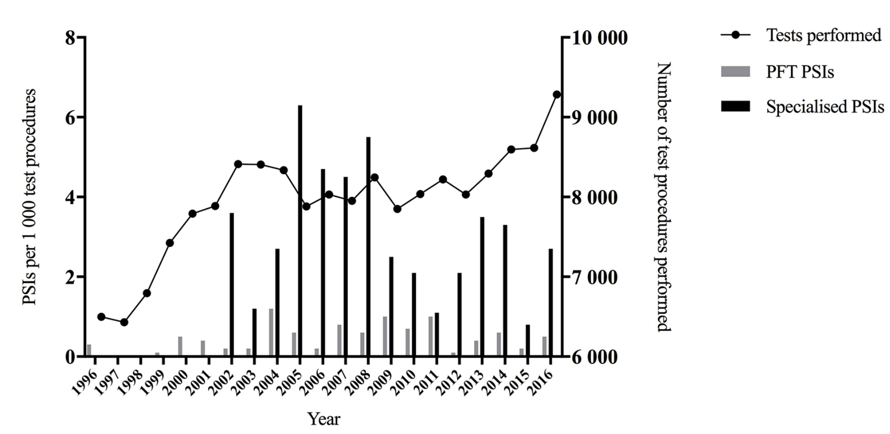
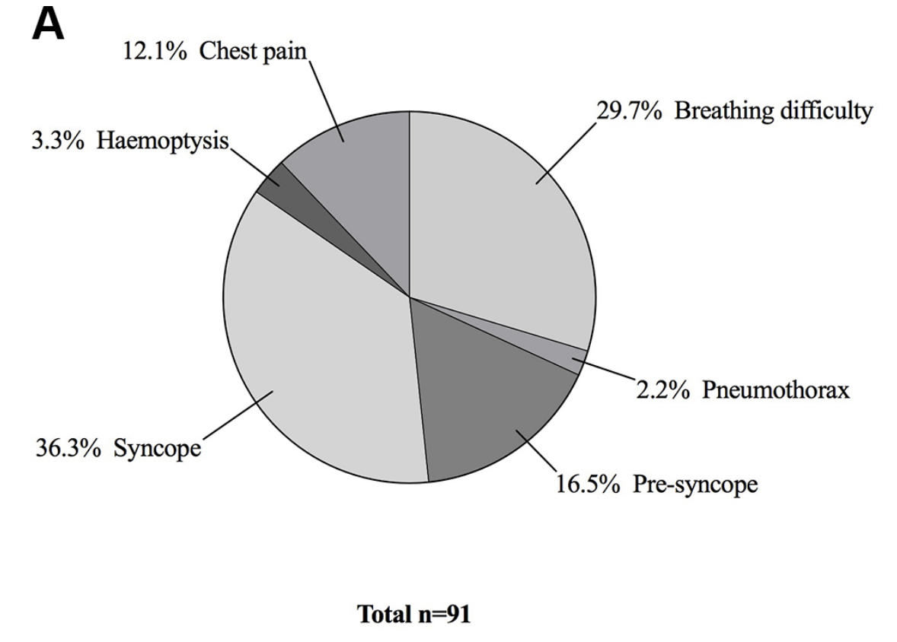
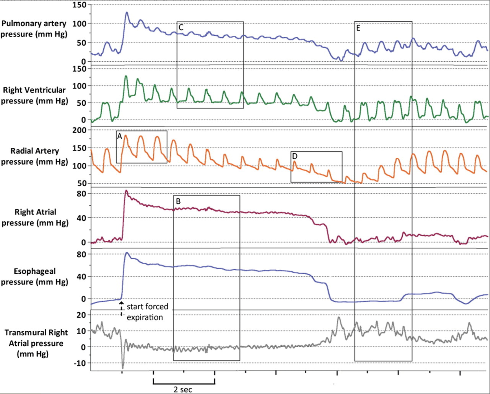

Exámenes Seguros
Estimado paciente,
Las pruebas de función pulmonar son procedimientos seguros y esenciales para evaluar la salud respiratoria. Estas pruebas miden la capacidad y eficiencia de sus pulmones, ayudando a diagnosticar y monitorear afecciones pulmonares.
Diversos estudios científicos respaldan la seguridad de estas pruebas. Por ejemplo, investigaciones han demostrado que la espirometría es una herramienta confiable y bien tolerada por la mayoría de los pacientes, incluyendo niños y adultos mayores. Los efectos adversos son raros y generalmente leves, como mareos transitorios o tos.
Además, organizaciones internacionales, como la American Thoracic Society y la European Respiratory Society, han establecido estándares y guías para garantizar la seguridad y precisión en la realización de estas pruebas.
Es importante destacar que la información obtenida de estas pruebas permite a los profesionales de la salud diseñar planes de tratamiento adecuados y personalizados, mejorando su calidad de vida.
Si tiene alguna inquietud o pregunta sobre el procedimiento, no dude en consultarnos. Su bienestar es nuestra prioridad.
Atentamente,
FPAIR
Evidencia Científica
Seguridad de las pruebas de función pulmonar: datos de 20 años
Publicación: Abril 2016; 29(4):385-387. doi: 10.1198/torquip-2077-202046.
Publicación electrónica: 20 de junio de 2017.
En una auditoría de un solo centro, se recopilaron datos demográficos y de incidentes de seguridad del paciente (PSI) y se clasificaron para las pruebas de función pulmonar realizadas entre 1996 y 2016, y se subdividieron en eventos cardiopulmonares o no cardiopulmonares.
Se notificaron 119 PSI de 186,000 Pruebas de Función Pulmonar; es decir, 0.6% incidentes de seguridad del paciente por cada 1,000 pruebas.
Los incidentes de seguridad del paciente que requirieron ingreso hospitalario y/o asistencia al departamento de emergencias ocurrieron aproximadamente una vez cada 10,000 pruebas y no hubo mortalidad asociada a Pruebas de Función Pulmonar.
Porcentaje de PSI en comparación con el número de pruebas realizadas
PFT, pruebas de función pulmonar; PSI, incidentes de seguridad del paciente.
Como podemos apreciar en el gráfico, el año 2005 se realizaron más de 9,000 exámenes de función pulmonar y los PSI registrados, no superaron los 4 episodios.
Distribución de PSI cardiopulmonares (n=91)
- Síncope 36.3%
- Dificultad respiratoria 29.7%
- Presíncope 16.5%
- Hemoptisis 13.9%
- Dolor torácico 12.1%
- Neumotórax 2.2%
Los PSI cardiopulmonares más frecuentes, reportados en 20 años, fue el síncope, seguido de la dificultad respiratoria (30%). La hiperventilación fue la causa más comúnmente informada de dificultad respiratoria, representando el 48% (13 pacientes) de los eventos.
Estudio de caso: Paciente con EPOC grave
Contexto del estudio
En otro estudio, realizado el año 2012, una paciente femenina de 70 años con enfermedad pulmonar obstructiva crónica (EPOC) muy grave, realizó una maniobra de espirometría (forzada) con mediciones hemodinámicas centrales simultáneas utilizando un catéter de arteria pulmonar y medición de la presión pleural utilizando un balón esofágico.
Representación gráfica del estudio
Aunque para esta paciente con EPOC muy grave, una maniobra de espiración forzada actuó como una maniobra de Valsalva con grandes efectos negativos sobre la función cardíaca, ELLA PERMANECIÓ ASINTOMÁTICA.
Al inicio de la espiración forzada (A), el aumento de la presión pleural fuerza la sangre hacia el corazón izquierdo, lo que provoca un aumento de la presión en la arteria radial.
Posteriormente, hay una caída de la presión arterial sistémica a 70/50 mmHg (D) que es el resultado de esta espiración forzada.
Al volver a inspirar, todos los valores vuelven a la normalidad (E).
La caída resultante en la presión arterial sistémica respalda la recomendación de que la espirometría se debe realizar en posición sentada.